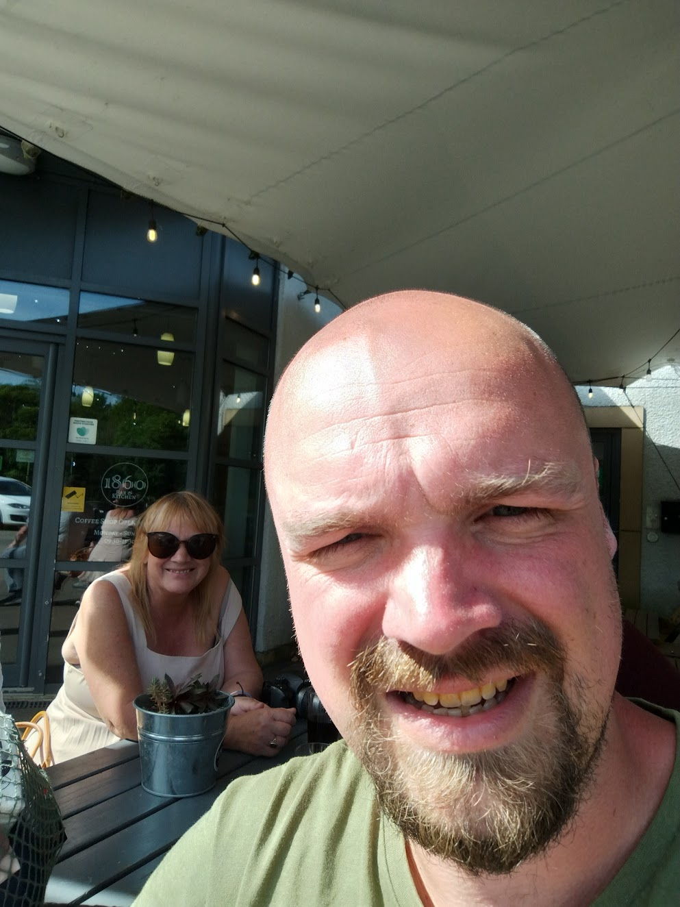
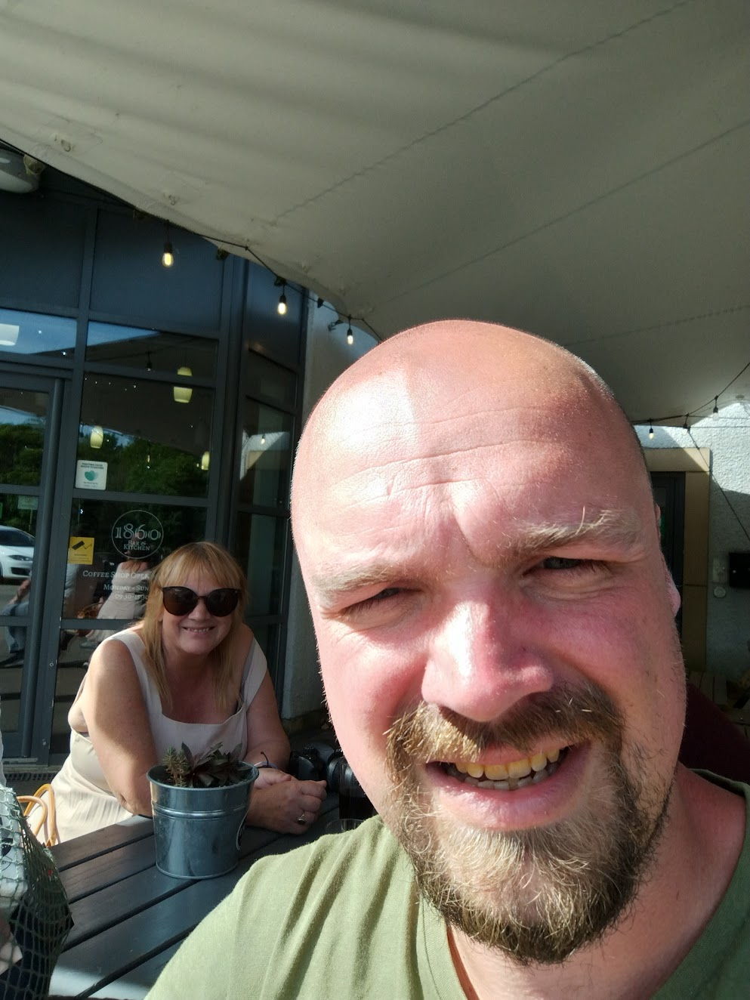

Ushaw
A large monastery recently converted to a B&B amongst other things. Has a nice garden, a cool little book room open 24hrs, and various exhibits.
Quite a nice place to stay.

Historic posh city built on a hill complete with rivers, a castle, cathedral, old pubs, and lots of students. Everyone there is very fit and healthy. Nice place, similar to York.
 


Lindas Farne
An old healing / religous island that regularly gets cut off the mainland by the tide.
Interesting little village with a castle, church, pubs, etc.
A bit on the expensive side and out of the way but it was nice to see

Conway
A small yet very interesting old town. It boasts a visitable castle, walkable castle walls, a small harbour and beach, shops, pubs, and a nice decent sized woodland walk.
It's also relatively close to other interesting places to visit in wales.
I really like conway.